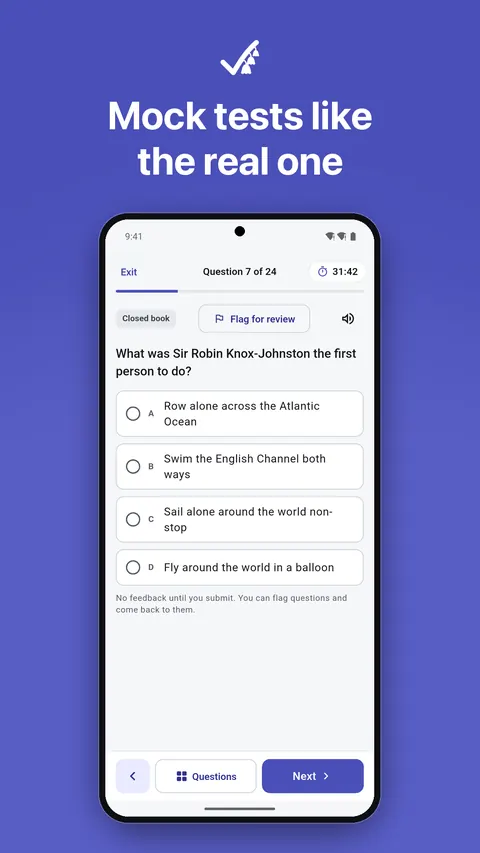
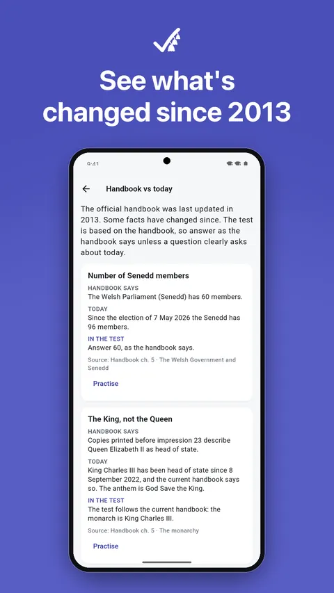

Not a government app. Bluebell is an independent study app made by Kodfu Bilisim. It does not represent the Home Office, UK Visas and Immigration or any government body, and it is not affiliated with or endorsed by them or by TSO.
Life in the UK practice: Chapter 5, the UK government, the law and your role
Free, with no sign-up and nothing saved. These 10 questions are original, written from the facts in the handbook. No app or website can show you the real test questions.
What this chapter covers
Chapter 5 explains how the country is run, how the law works and how you can take part. These questions cover how democracy developed, who does what in government, the difference between criminal and civil law, and everyday duties such as jury service.
- British democracy: how the right to vote grew, the constitution, the monarchy, Parliament and elections.
- Devolution and the wider world: the devolved governments, local councils, the civil service, the media and international organisations.
- Respecting the law: criminal and civil law, the police, the courts, rights and equality, tax and driving.
- Your role in the community: voting, jury service, volunteering, helping at school and looking after the environment.
Some facts about government have changed since the handbook was printed. In the test, answer as the latest handbook says. The Bluebell app has a Handbook vs today screen that lists these changes.
Question 1 · Choose one answer
In which year was the voting age lowered from 21 to 18?
- 1918
- 1928
- 1945
- 1969
Show the answer
Answer D: 1969
The voting age of 18 was set in 1969. Women won the vote on equal terms with men in 1928.
Source: Handbook ch. 5 · British democracy and the government
Question 2 · True or false?
At the start of the 19th century, every adult man in Britain had the right to vote.
- True
- False
Show the answer
Answer B: False
Only men over 21 who owned a certain amount of property could vote. The right to vote was widened gradually.
Source: Handbook ch. 5 · British democracy and the government
Question 3 · Choose one answer
Why is the British constitution often described as unwritten?
- It has never been approved by Parliament
- It is not set out in one single document
- It is kept secret from the public
- It can only be changed by the monarch
Show the answer
Answer B: It is not set out in one single document
The constitution is made up of laws, conventions and institutions rather than one written document.
Source: Handbook ch. 5 · British democracy and the government
Question 4 · Choose one answer
What is the main role of civil servants?
- To stand for election to Parliament
- To judge cases in the criminal courts
- To carry out government policy
- To run election campaigns for parties
Show the answer
Answer C: To carry out government policy
Civil servants help develop and carry out government policy and deliver public services.
Source: Handbook ch. 5 · Devolution; The UK and the world
Question 5 · Choose one answer
How are local councils funded?
- Only by selling council land
- Only by donations from businesses
- By the monarch's private income
- By central government and local taxes
Show the answer
Answer D: By central government and local taxes
Councils receive money from central government and raise local taxes, such as council tax.
Source: Handbook ch. 5 · Devolution; The UK and the world
Question 6 · Choose one answer
Which kind of law is used to settle disputes between people or organisations?
- Military law
- Criminal law
- Civil law
- Church law
Show the answer
Answer C: Civil law
Civil law settles disputes between individuals or groups. Criminal law deals with crimes punished by the courts.
Source: Handbook ch. 5 · Respecting the law
Question 7 · Select TWO answers
Which of these are criminal offences? Select TWO.
- Selling tobacco to someone under 18
- Carrying a knife for self-defence
- Owing money to a friend
- Disagreeing with a landlord about repairs
Show the answer
Answer A: Selling tobacco to someone under 18, B: Carrying a knife for self-defence
Selling tobacco to under-18s and carrying any weapon, even for self-defence, are crimes. Debts and landlord disputes are civil matters.
Source: Handbook ch. 5 · Respecting the law
Question 8 · True or false?
It is against the law to smoke in nearly every enclosed public place in the UK.
- True
- False
Show the answer
Answer A: True
Smoking tobacco is banned in nearly all enclosed public places, and signs show where you cannot smoke.
Source: Handbook ch. 5 · Respecting the law
Question 9 · True or false?
Voting in local and national elections is one of the shared responsibilities of people in the UK.
- True
- False
Show the answer
Answer A: True
Voting is listed among the shared responsibilities, although nobody can be forced to vote for a particular candidate.
Source: Handbook ch. 5 · Your role in the community
Question 10 · Choose one answer
How are people chosen for jury service?
- By their local MP
- From people who pass a legal exam
- At random from the electoral register
- By applying to the local court
Show the answer
Answer C: At random from the electoral register
Jurors are picked at random from people on the electoral register.
Source: Handbook ch. 5 · Your role in the community
You’ve seen 10 of 205 questions in Chapter 5
The Bluebell app has all 205, each with an explanation. Across the whole Life in the UK there are 942 questions in 17 topics, plus timed 24-question mock tests of 45 minutes.
24 of them are free in the app, the rest come with Pro. Bluebell Pro is £6.99 one-off: every question, every mock test and every study note. No subscription.
Android now; iPhone version not yet available.
Worth remembering
- The UK is divided into 650 constituencies, and each one elects a Member of Parliament.
- A general election must be held at least every five years.
- Members of the House of Lords are called peers. They are not elected and do not represent constituencies.
- Defence, foreign affairs and immigration stay with the UK Parliament. Many public services, such as education and health, are run by the devolved governments.
- Criminal law deals with crimes punished by the courts. Civil law settles disputes between people or organisations.
Keep going
- Chapter 1: The values and principles of the UKBritish values, freedoms, citizenship · 10 questions
- Chapter 2: What is the UK?The four countries and what the names mean · 5 questions
- Chapter 3: A long and illustrious historyBritish history, from the Stone Age to modern Britain · 10 questions
- Chapter 4: A modern, thriving societyUK cities, customs, sport, arts and places · 10 questions
- Life in the UK Test guideFormat, booking, what to bring and the day itself
Want more practice? Get the Bluebell app
942 original practice questions across all five chapters of the handbook, plain-English explanations, full mock tests of 24 questions in 45 minutes, spaced review and a mistakes list. It works offline, with no ads and no account.



Free: Chapter 1 in full, six free questions in every other topic, two full mock tests and all the tools.
Bluebell Pro, £6.99 one-off: every question, every mock test and every study note. No subscription.
Android now; iPhone version not yet available. Bluebell helps you prepare; it cannot promise a pass.
Official sources
Check these public pages before you book or apply.
- Life in the UK Test (GOV.UK)
- What happens at the test and the pass mark (GOV.UK)
- The handbook and study materials (the shop linked from GOV.UK)
- Book the test (the booking service linked from GOV.UK)
Bluebell's guides are general information, not immigration advice.